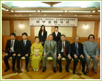
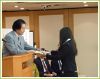
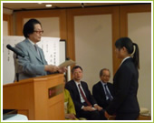
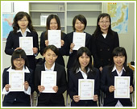

「中国福祉医療人材育成基金」奨学金
当財団では、2008年度より中国の福祉医療人材育成を目的とする奨学金を支給しております。
支給金額及び支給期間（2014年4月から支給）
|
応募条件
| ■応募資格： | 1.中国国籍を有する者 |
| ■応募方法： | 当財団指定の中国医療系大学に募集要項と申請書を配布し、現地にて一次選考（書類審査）・二次選考（面接）を実施する |
採用実績（計19名）
| ■2014年 4月採用者 (4名) 月額10万円
|
||||||||||||||||||||||||||||||||||||||||||||||||||
| ■2012年度 採用者 なし | ||||||||||||||||||||||||||||||||||||||||||||||||||
■2011年 4月採用者 (1名)
|
||||||||||||||||||||||||||||||||||||||||||||||||||
■2010年 4月採用者 (1名)
|
||||||||||||||||||||||||||||||||||||||||||||||||||
■2009年 4月採用者 (16名)
|
||||||||||||||||||||||||||||||||||||||||||||||||||
■2008年 10月採用者 (1名)
|
||||||||||||||||||||||||||||||||||||||||||||||||||
|  |  |  |
| 2014年奨学金授与式 |
活躍中の奨学生 OB・OG
| 2010年2月22日に実施された看護師国家試験を奨学生10名（2008年10月生1名と2009年4月生9名）が受験し、計8名合格。 看護師資格を取得した8名の就職先は以下の通りです。 |
 |
【医療法人鉄蕉会亀田総合病院】
| 张 碧娟 (チョウ ヘキシュン） 2009年4月奨学生 |
张 焕 (チョウ カン) 2009年4月奨学生 |
许 丽娇 （キョ レイキョ） 2009年4月奨学生 |
| 许 倩倩 （キョ セイセイ） 2009年4月奨学生 |
鮑 宇 （ホウ ウ） 2008年10月奨学生 |
|
【医療法人社団 宏和会 エビハラ病院】
| 关 丽匀 （カン レイキン） 2009年4月奨学生 |
汪 国珍 （オウ コクチン） 2009年4月奨学生 |
杨 洪波 (ヨウ コウハ） 2009年4月奨学生 |